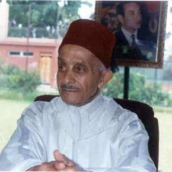
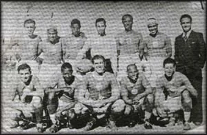
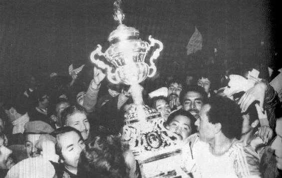
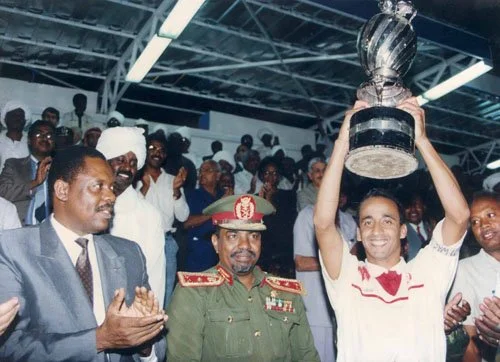
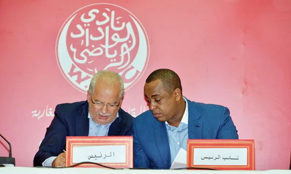

Mohamed Benjelloun Touimi - Fondateur
et premier président du Wydad
Le Wydad Athletic Club, également connu sous les noms de Wydad ou WAC, est l'un des clubs les plus emblématiques du Maroc. Fondé en 1937 à Casablanca, le club est réputé pour sa passion, sa résistance et ses succès.
Surnommé « Le Wydad », le club est connu pour ses couleurs : le rouge et le blanc. Les matchs à domicile se déroulent au Stade Mohamed V, également appelé le Stade d’Honneur ou Donor, une enceinte légendaire qui a été témoin de nombreux exploits du club.
Le Wydad Athletic Club a été créé par un groupe d'intellectuels et de jeunes résistants pendant l'occupation française du Maroc en 1937, notamment feu Mohamed Benjelloun. Il a d’abord débuté avec une équipe de water-polo avant de former sa section de football en 1939, avec le soutien du Père Jégo.
Le club a rapidement gravi les échelons en accédant à la première division du championnat marocain en 1942, et a remporté son premier grand trophée en 1948, qu’il a conservé pendant quatre ans. Durant cette période, le Wydad a également dominé le football maghrébin en remportant trois Championnats d’Afrique du Nord, deux Supercoupes d’Afrique du Nord et une Coupe d’Afrique du Nord.

Equipe du Wydad lors de sa première saison
En 1956, le Maroc a obtenu son indépendance et le Wydad est devenu le premier club enregistré auprès de la Fédération Royale Marocaine de Football avec le numéro d’immatriculation : 1. Le club a même remporté la Coupe de l’indépendance en battant le FC Maghreb Aksa à Tanger grâce à un but d’Abdelhak Kadmiri, le 9 décembre 1956.
Jusqu'en 1969, le Wydad a continué son parcours en remportant huit championnats, mais n'a jamais réussi à remporter la Coupe du Trône malgré quatre finales disputées. L’une d’entre elles s’est soldée par une décision controversée en 1957, où la coupe a été attribuée à la Mouloudia d’Oujda, sous prétexte que cette équipe avait marqué en premier, alors que le match s’était terminé sur un match nul 1-1. Selon les règles en vigueur à l’époque, le match aurait dû être rejoué
Lors de l'édition 1969/1970 de la Coupe, le Wydad a atteint la finale pour affronter la Renaissance de Settat, après avoir battu la Hassania d’Agadir, le Difaâ Hassani El Jadidi et le Maghreb Fassi en demi-finale. La demi-finale a été très disputée, avec un premier match nul 1-1 qui a nécessité un match rejoué. Le Wydad s’est qualifié en remportant le deuxième match sur le score de 1-0.

Larbi Aherdane en train de porter le trophée de la Coupe Mohammed V
en 1979
Cette année, le Wydad était décidé de remportant le titre surtout le match se joua devant les supporters du Wydad au Stade d’Honneur et avec la présence du Roi Hassan II.
L’année de cette finale, le Wydad était déterminé à remporter le titre, surtout en jouant devant ses fervents supporters au Stade d’Honneur et en présence du Roi Hassan II. Après 90 minutes de jeu, une explosion de joie a retenti
Depuis, le Wydad Athletic Club a réussi à remporter huit autres Coupes du Trône, portant son total à neuf victoires mais depuis 2001, le Wydad n’a plus remporté ce trophée, malgré trois finales disputées, dont deux ont été perdues lors des tirs au but.
Après avoir remporté de nombreux championnats, coupes nationales et compétitions maghrébines, les ambitions du Wydad, de sa direction et de ses supporters ont continué à croître. L’équipe a commencé à organiser des matchs amicaux contre de grands clubs mondiaux. Le Wydad a également affronté de grandes équipes lors des différentes éditions de la Coupe Mohamed V.
Lors de son premier match dans cette coupe, le Wydad a affronté le Real Madrid, contre lequel il a perdu difficilement sur le score de 2-0. Le Wydad a également affronté des équipes telles que le Slovan Bratislava, le Bayern Munich, São Paulo, Aguila, Anderlecht, Sporting de Lisbonne, la sélection roumaine, Everton et Monaco. Le Wydad a également affronté des équipes africaines ou marocaines telles que le Hafia Conakry, l’AS FAR, l’ASC Jeanne d’Arc de Dakar et le Canon Yaoundé, contre lequel il a remporté la finale en 1979.

Fakhreddine Rajhi en train de soulever la coupe
Le Wydad est la seule équipe, en dehors des équipes d’Amérique latine et d’Europe, à avoir remporté le titre de la Coupe Mohamed V, qui a disparu en 1989, tout au long de son histoire.
Entre 1989 et 1993, le Wydad a connu sa première période de grands succès. Pendant cette période, le club a remporté trois championnats, une Coupe du Trône, une Ligue des Champions arabe et une Supercoupe arabe, mais surtout sa première Ligue des Champions africaine, remportée en battant le Hilal du Soudan 2-0 à Casablanca lors du match aller et un match nul au retour 0-0, à Omdourman.
Ces victoires ont couronné les efforts à long terme du regretté Abderrazak Mekouar, président du Wydad de 1972 à 1993, qui a révolutionné la gestion du club et influencé l’ensemble du football marocain.
Parmi les mesures phares prises par le président Mekouar figurait l’introduction de la rémunération des joueurs, faisant du Wydad la première équipe marocaine à adopter cette pratique.
À la fin de la saison 1993, le président emblématique du Wydad et plusieurs joueurs ont quitté le club, soit pour jouer à l’étranger, soit pour prendre leur retraite, soit pour rejoindre d’autres équipes marocaines.

A gauche Abdelilah Akram, ancien président du Wydad et à droite son successeur Said Naciri,président actuel et président le plus réussi de l'histoire du Club
Le Wydad est donc entré dans une période de renouveau, mais aussi de doute. Pendant ce temps, le Raja Casablanca, autre équipe de la ville, a profité de ces incertitudes pour dominer le championnat entre 1996 et 2001, remportant notamment sa deuxième et troisième Ligue des Champions africaine en 1997 et 1999, cette dernière étant la dernière édition remportée par le Raja.
Pendant cette période de domination du Raja, le Wydad a remporté quatre Coupes du Trône, dont la dernière en date en 2001. Grâce à cette victoire, le Wydad a pu participer à la Coupe d’Afrique des vainqueurs de coupe (précurseur de la Coupe de la Confédération africaine),
qu’il a remportée en battant l’Asante Kotoko en finale grâce au critère du but à l’extérieur. Victoire 1-0 à l’aller à Casablanca et défaite 2-1 à Kumasi, au Ghana.
Ensuite, le Wydad a connu une période de doute et d’instabilité entre 2003 et 2014, au cours de laquelle le club a remporté son premier championnat en 13 ans lors de la saison 2005-2006. C’est également pendant cette saison que les Ultras Winners ont été créés et sont devenus les meilleurs ultras au monde selon différents classements, devenant ainsi des acteurs majeurs du club,
surtout à Casablanca. Le Wydad a remporté à nouveau le championnat en 2010, dans un suspens intense, puisqu’il a dû attendre la 30e et dernière journée pour prendre la première place,
après sa victoire à Casablanca contre le FUS de Rabat et la défaite du Raja à Rabat face à l’AS FAR.
En 2014, Said Naciri a été élu nouveau président, succédant à Abdelilah Akram, qui avait dû quitter ses fonctions suite au boycott des supporters du Wydad, qui critiquaient sa gestion du club.
Le président Said Naciri a permis au club de retrouver la stabilité grâce à une gestion, certes autoritaire mais efficace. Sa stratégie a rapidement porté ses fruits, et le Wydad est redevenu un grand club africain qui suscite l’attention dans le monde entier. Depuis 2015, le Wydad a remporté le championnat à cinq reprises et a terminé au pire à la deuxième place. Le club s’est également illustré en remportant deux Ligue des Champions africaine, la première sous la direction de Houcine Ammouta et la deuxième avec Oualid Regragui, qui a ensuite rejoint l’équipe nationale du Maroc en tant que sélectionneur et a réussi à atteindre les demi-finales de la Coupe du Monde 2022 au Qatar.